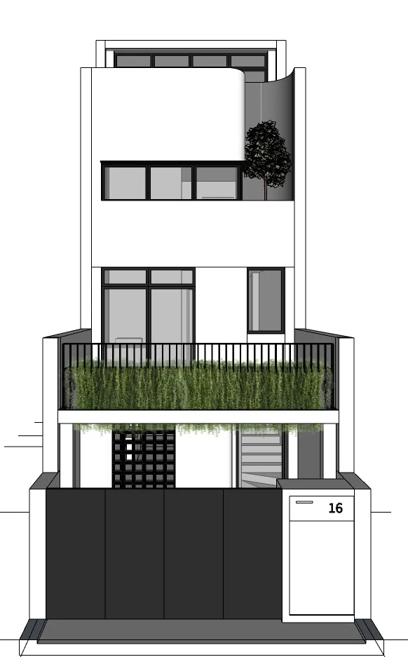

Macpherson · In progress
House on House
- Location
- Macpherson
- Typology
- Landed residential
- Area
- 260 m²
- Scope
- Architectural
- Status
- In progress
Rather than start again, the project adds. A new storey is built over the existing two-storey terrace, giving the owners the space they need without giving up the house they already have.
The addition is read as its own volume, set back and lighter than the masonry below, with a planted terrace in between. The result is a house that shows its two chapters rather than hiding the join.